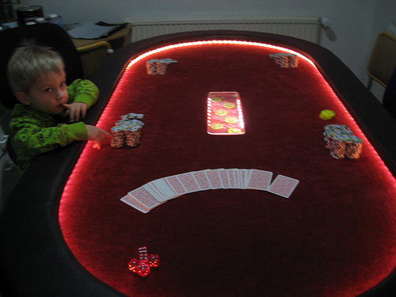

| *Pokertable*
This is a project that i already started at fablab 203 in school and finished in Fab Academy 09' I Made a pokertable and this is the materials that are needed: 12" and 15" 2,75*122 ply wood boards. Red felt. Black vinil. Plexiglass. Ultrabright led lights. Few meters of christmas lightcables. A stable gun. Sponge. Strong glue. |
||
|  | *How To Make* I cutted out the two ply wood boards and glued sponge on the upper one than I stretched the black vinil over the sponge and stabled it to the ply wood (did same to the lower one but with felt and no sponge).Then I Made holes in the red felt for the leds and rasterd "Royal Flush" (best hand in poker) in 6mm plexiglass.When that was all dun I laid the cable on the board and screwed it together from the bottom side of the table.Later when I have time I want to upgrade the table by putting cup holders under the table so you can slide them out. |
|
 |
 |
These are few pictures of the end resaults. The only thing I thing I did wrong was to put Ultra Brights in the table because it's really annoying playing with them turned on,and you can never lay your cards on it, because you can see through the cards. Over all I'mhappy with the resaults. |
| This Is A tool cabinet for my garage. It has rastered
plexi windows with my name on it and some tools,screewdriver,wrench. Wile sanding the filler and Primer.. |
||
| This is the end resaults ( It's the one to right ) | ||
| This was A project that I made for my garage I needed A spray- can shelf and decided to make one, It's just 7 peaces that you can pressfit together,but I'm gona put few screws aswell just to be sure.. If I will put some heavy things on it. | ||